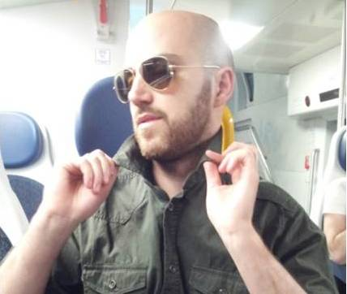
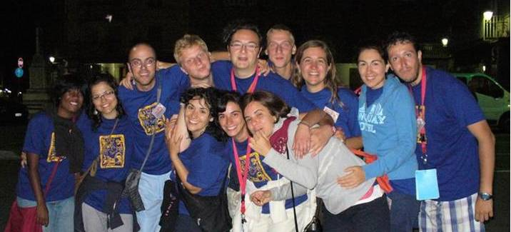
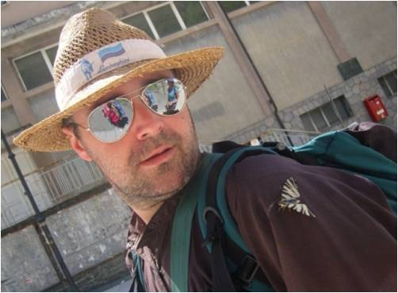
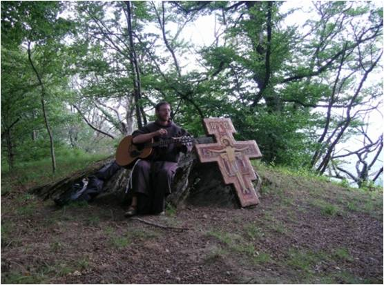
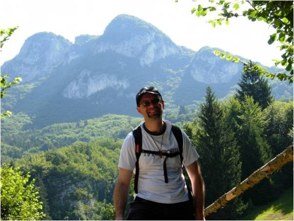
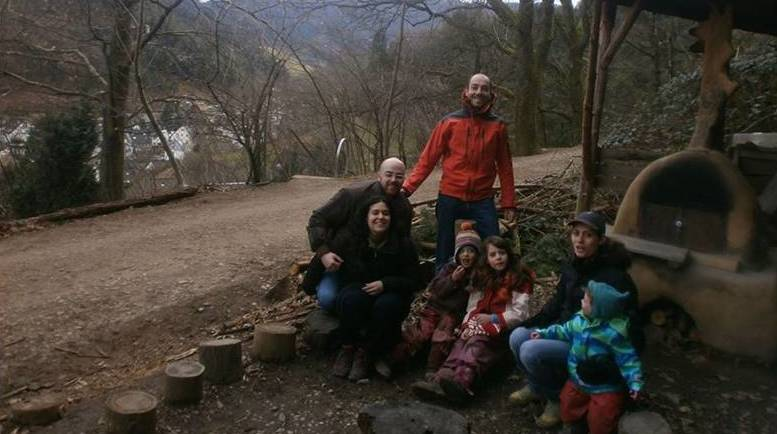

Lorenzo and Daniela
Saturday October 18th 2014, h. 11
Church Gesù Crocifisso, Ravello di Parabiago
Hello to everybody and welcome!
with this web page we want to share the delight coming from our decision to get married, the choices and the life path we have made so far, but most of all we want to thank you because if you are reading it means that you are important to us.
Here below you can find some information about us and some practical guidelines for the wedding day.
THE BRIDE

DANIELA 33 years old, second child of mom Luigia and dad Vincenzo. Before she Roberto, born in Heaven, and then Chicco. Teacher enthusiastic of her job, her Sicily and trinkets with which she tries to create something new because she believes that everything can have a second chance. She loves the “low-speed” life but the love for her boyfriend has “forced” her to travel around Europe dealing with high speed trains and airplanes!!
THE GROOM

LORENZO 30 years old, the third of 4 beautiful big boys; with him: Ale, Marco and Ricky raised with a lot of love and patience from Mom Grazia and Dad Carlo. Researcher of the things of this world as of those “Above”, he studies in Braunschweig (DE) for some years. A lover of good beer (obviously dunkel ;p), good food, good company and high speed, sometimes he has to “slow down” to wait for her girlfriend that he loves.
THE STORY
LE VIE DEL CUORE

31° Franciscan pilgrimage to Assisi.
Was the Franciscan pilgrimage the spark? Maybe … if you want to know more, read our story or ask to us :-)
For further info about the Franciscan pilgrimage visit the website www.marciafrancescana.it
MARRIAGE
When we found out that Someone immensely loved us, we couldn’t do anything else than returning that love with our YES. So here we are …
We believe that without the “paw” of Christ, without the gift of his Grace, we wouldn’t have got far and without His support we wouldn’t be able to keep the promise of eternal love. For this reason we want to get married in His name, because only mirroring us in Him we learn to love and to love each other. Following the direction He will suggest us we can achieve the goal of the project in which we are called: the full joy!
WITNESSES
GRAZIA named Grace for the friends and "sore'" (sister) for the bride. Precious friend and a reference point during the years lived in Milan. She shared sleepless nights and slices of chocolate cakes from the unspeakable number of calories, but most of all she shared the journey of the couple in their early steps.

CHICCO Husband of the beautiful Mary and father of the sweet Emma. Cheerful, friendly, dynamic and full of ideas, he always has a solution for everything and everyone, especially for a distracted sister :)
ANDREA Lorenzo's friend and fellow student at the same University. He is also a researcher and "wise dispenser of advices". He strongly encouraged the groom to participate to the Franciscan pilgrimage ....... suggesting to leave the sleeping bag at home!! You cannot imagine how cold was during that nights....but that's another story.
FRIAR CARLO with his disarming humour is a valuable friend, a tireless worker of the cooperative God & Co, he deals with "his" indigent brothers in the mission St. Anthony (Milano) with contagious enthusiasm.
WHO BLESS THE WEDDING

FRIAR GIAMBATTISTA, alias Russell Crowe in brown, alias Gibo! Friendly and helpful from the beginning, he is a comprehensive and attentive guide, an important reference point in our journey.

FRIAR MATTEO sparkling as Alka Seltzer, now he “sparkles” in the cloister Rezzato. Chet Atkins-like guitar player he plays the starlings to the eggplants at the cloister’s garden. Finally, when he has time, he deals with youth ministry.

DON EMANUELE a volcano of sympathy, Lorenzo’s catechist, he was called by the Lord and the Bishop to become a priest … luckily in Arco di Trento ;)
WHY 5p2p

We got to know 5pani2pesci on web, but after being got into what we read, we wanted to meet its authors: Alessandra, Francesco Rao and their 3 children! So we visited them in Freiburg (Germany) where they are currently living. Welcoming, volcanic, generous and familiar. What they call “their poverty” actually it is their greatest wealth: they are able to devote themselves with humility and truth to someone who meets them. We want to support their evangelization project and if you want to know more visit their website: http://5p2p.it
OUR WEDDING LIST
For our wedding we decided not to have a wedding list. For those who would like to contribute to the wedding, they can do it offering a donation via our bank account:
Daniela Nibali
IBAN IT32C0623051280000046369234
SWIFT CRPPIT2P327
HOW TO REACH US
From the Church to the Restaurant
From Parabiago, Piazza Paolo VI to Robecco sul Naviglio, Cascina Barcella
From the Bride to the Church
From Cantù, Via Petrarca 15 to Parabiago, Piazza Paolo VI
From Milano to Parabiago
It is possible to take the train from Milano Porta Garibaldi Passante (S5) in the direction of Varese / Gallarate.
For Lorenzo’s guests only
They are accommodated at Hotel del Riale (Parabiago): www.hotelriale.it